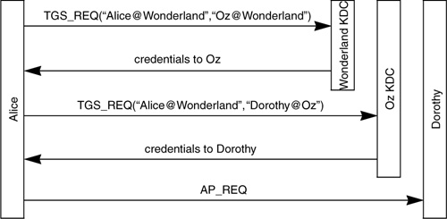

Networking Security Networking Security Networking Security Security Networking Security Networking Security Networking Charlie Kaufman Radia Perlman Mike Speciner Prentice Hall Network Security: Private Communication in a Public World, Second Edition Networking Security Networking Security Networking Security Security Networking Security Networking Security Networking Charlie Kaufman Radia Perlman Mike Speciner Prentice Hall Network Security: Private Communication in a Public World, Second Edition
13.7. Interrealm Authentication
Suppose the world is partitioned into n different Kerberos realms. It might be the case that principals in one realm need to authenticate principals in another realm. This is supported by Kerberos. The way it works is that the KDC in realm B can be registered as a principal in realm A. This allows users in realm A to access realm B's KDC as if it were any other resource in realm A.
Suppose Alice, in realm Wonderland, wishes to communicate securely to Dorothy in realm Oz. Alice (or rather her workstation, on her behalf) notices that Dorothy is in a different realm. She asks her KDC for a ticket to the KDC in realm Oz (see Figure 13-4). If the managers of Wonderland and Oz have decided to allow this, the KDC in Oz will be registered as a principal in Wonderland, and the Wonderland KDC will have assigned a master key to Oz's KDC. Wonderland's KDC will give Alice a ticket (encrypted with that master key) to the KDC in Oz. Then Alice sends a TGS_REQ to Oz's KDC. The message lists Wonderland as the source realm, which tells Oz's KDC what key to use to decrypt the ticket. The Oz KDC then issues a ticket for Alice to talk to Dorothy.
After Alice sends this ticket to Dorothy, Alice and Dorothy will know they are talking to each other, and they will have a key KA-D they can use to protect data they send back and forth, exactly as if they were in the same realm.
It doesn't work in Kerberos V4 to start in realm A, get a ticket to realm B, and from there get a ticket to realm C. In order for a principal in realm A to talk to a principal in realm C, C's KDC has to be registered as a principal in realm A. What prevents going from realm A to C through B? Suppose realms A and B share a key, and realms B and C share a key, but A and C do not share a key. Suppose Alice@A would like to talk to Carol@C. Alice can indeed get a ticket to B, since B is registered as a principal in realm A. Then, with a ticket to B, Alice can request, from B, a ticket to C. B will comply, since B thinks of C as just another principal in realm B. But then when A attempts to ask C for a ticket to Carol, the TGS_REQ she sends C will have the REALM field as B (so that C will know what key to use to decrypt the ticket), and in the ticket, Alice's realm will be A. C will refuse to issue a ticket for Carol since the two realms don't match. (See §13.12.5 TGS_REQ for a description of the fields in the TGS_REQ.)

Kerberos V4 deliberately prevents access through a chain of KDCs. If it didn't, then a rogue KDC could impersonate not only its own users, but those of any other realm, by claiming to be the penultimate KDC in a chain.
|